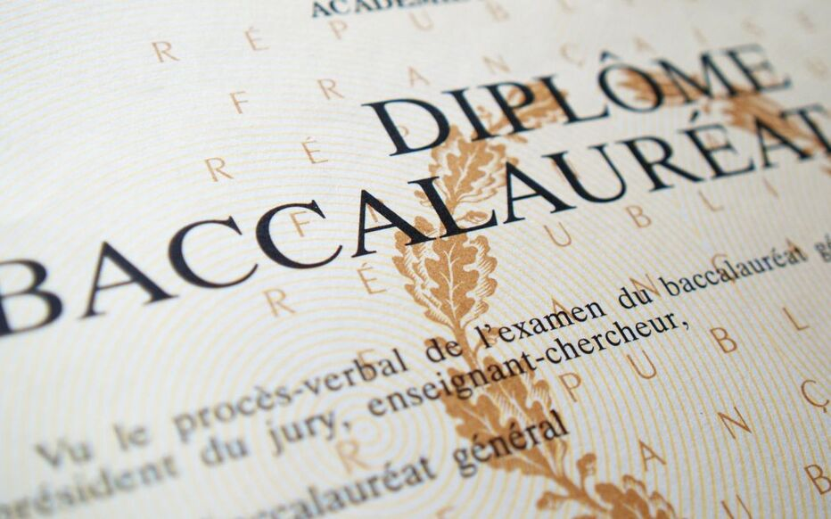
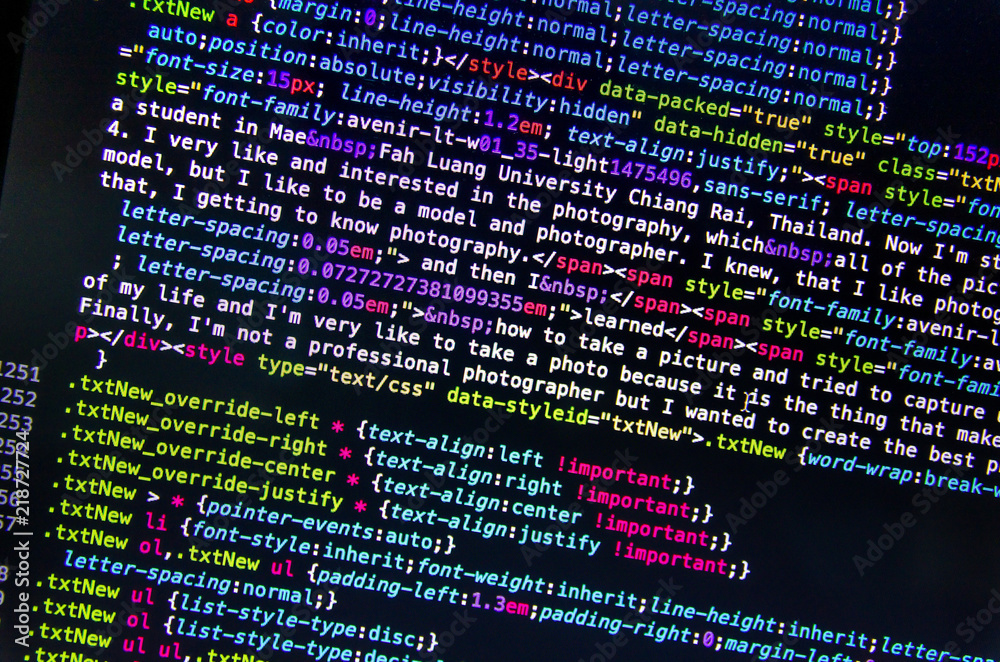
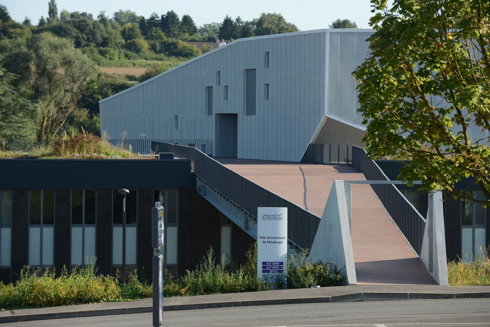
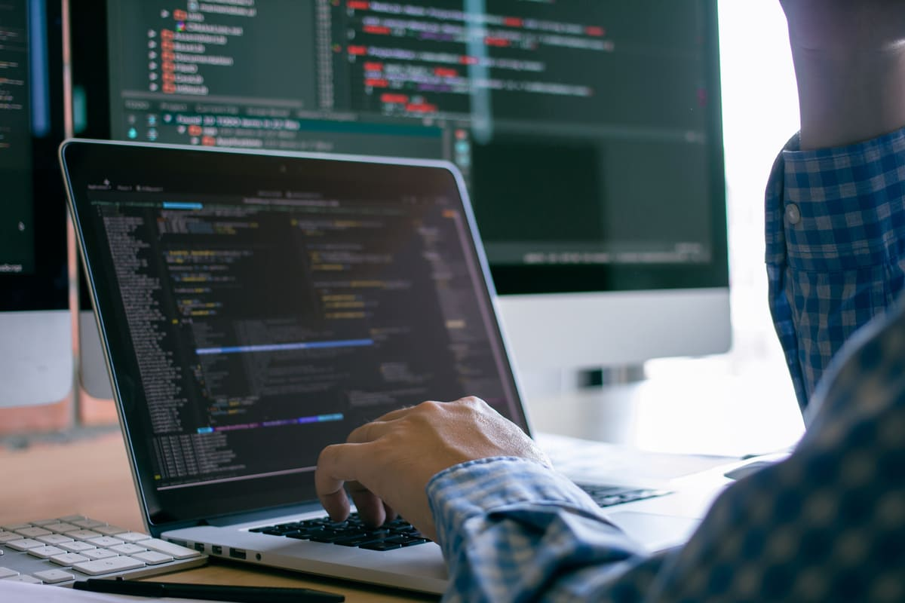

Si vous êtes sur cette page, c'est que vous souhaitez connaître mon parcours ainsi que mes motivations.
Alors cher lecteur, voici mon histoire :

Depuis aussi loin que je me souvienne, l'informatique a toujours été ma passion. C'est à travers les jeux vidéos que s'est éveillé mon intérêt pour la programmation. Issu d'un Baccalauréat Général avec comme choix de spécialité NSI (Numérique et Sciences Informatiques), mais également en mathématiques complétée par des bases solides en physique-chimie ainsi que titulaire d'une mention européenne en anglais, j'ai tracé mon chemin vers un avenir où l'informatique est au cœur de mes aspirations.
La fascination pour les possibilités infinies de création offertes par la programmation a été le moteur de ma décision. Délaissant les sentiers plus traditionnels, je me suis orienté vers un horizon où le code devient langage, où chaque algorithme est une invitation à repousser les limites de l'imagination. Le développement et la conception d'applications sont devenus mes terrains de jeu, où chaque ligne de code est une pièce essentielle dans la construction d'un monde numérique en perpétuelle évolution.


Cependant, conscient de l'importance du management et de la communication dans le monde professionnel, j'ai pris en compte ce facteur lors du choix de ma formation. Car au-delà de la maîtrise technique, savoir orchestrer une équipe, communiquer efficacement et comprendre les enjeux stratégiques sont des compétences essentielles pour mener à bien tout projet, qu'il soit technique ou humain. C'est donc à l'issue de cette conclusion que je me suis orienté vers un BUT Informatique à l'IUT de Maubeuge.
En tant qu'étudiant en 2ème année de cette formation, je m'efforce chaque jour de consolider mes connaissances et de perfectionner mes compétences, conscient que cela fera de moi un atout de taille pour le monde du travail. Animé par une motivation sans faille, je suis prêt à relever tous les défis qui se dresseront sur mon chemin, et à contribuer activement à la construction d'un avenir numérique toujours plus innovant et prometteur.

Ainsi, mon parcours témoigne de cette passion précoce pour l'informatique, nourrie par les mondes virtuels des jeux vidéo, et de mon engagement à explorer les multiples facettes de ce domaine. C'est dans cette convergence entre la passion et la raison, entre la technologie et l'humain, que je trouve ma voie, prêt à relever les défis d'un monde en constante transformation, où l'informatique et la gestion s'entrelacent pour façonner l'avenir.